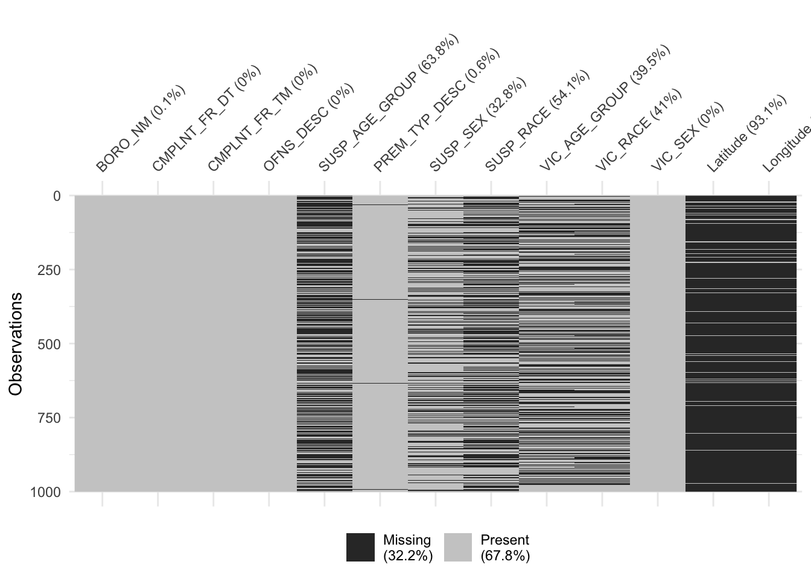
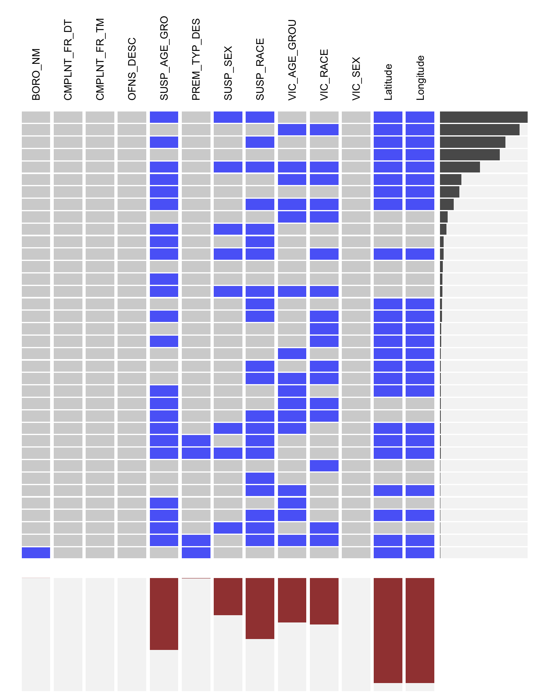
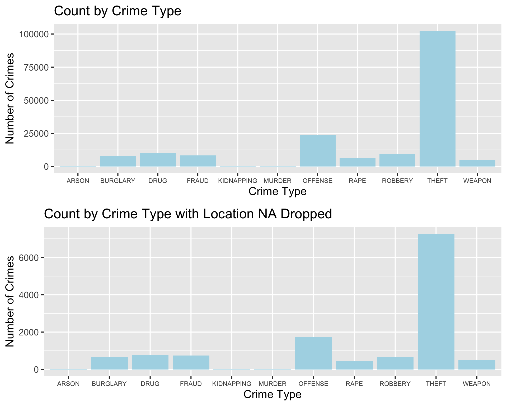

Chapter 4 Missing values
We randomly sample 1000 data to analyze the missing value patterns of the dataset after cleaning the data. We also change the “UNKNOWN” entry to NA for convenience.

From the plot above, we see that majority of missing data is from the columns: “SUSP_AGE_GEOUP”, “SUSP_SEX”, “SUSP_RACE”, “VIC_AGE_GROUP”, “VIC_RACE”, “Latitude” and “Longitude”. We also see that “Latitude” and “Longitude” are always missing together.
We can further investigate the missing row patterns by missing_data.frame function.
We find out that there are 30 different row missing patterns. Some of the patterns only have one or two occurrences and 20 of them have 10 occurrences or below.
We can check how many times each of the row missing pattern appears in the data set by the following visualization.

(Note that in the above plot, the columns represent the seven variables and the rows the missing patterns. The cells for the variables with missing values in the pattern are drawn in blue.)
Therefore we observe the following missing row patterns:
- The pattern that occurs the most frequently is missing both Latitude and Longitude, which is about 92% of the data.
- The information on the suspect is missing such as age, sex, and race tends to be missing along with some other variables.
Since the objective of our project is to analyze the safety issue, when doing the interactive part of the project, we will need to use the location information. So we have to drop all the data with Longitude and Latitude missing. This might affect the distribution of the crime, so we plot the following diagram to compare the distribution of crime types before and after the missing location data is removed.

Base on the above two plots, we see that after the data with missing location is removed, the distribution of crime types is unchanged. So, the missing location is somewhat random and we are safe to remove it when doing the interactive part. However, before the interactive part, we will keep the records without longitude and latitude in order to preserve more information of our dataset.